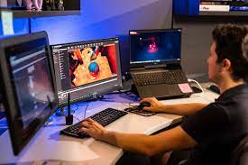

Game Design
In the future, I want to become a game designer. My major is game design because I just love how video games were made back then and in the present. So far I have learned how to 3D model, model 2D graphics, animation, and basic coding languages like html and some javascript. I hope I can learn more about these things espically learning how to Python, I've always wanted to learn how to use Python because I've heard it's the best coding language that people have used.
3D Modeling/Animation
When getting into the field, I first learned how to model 3D and 2D graphics. So far I've used Autocad but I think Maya is better for my field because there are more options for modeling objects while Autocad is more so for designing blueprint. I've also used Maya to learn how to animate 3D objects.
Building a World
After learning the basics of modeling with 3D and 2D graphics, I learned how to implement those elements by creating a level and then move on to building a world. So far I've used Unreal Engine and Unity.
.jpg)